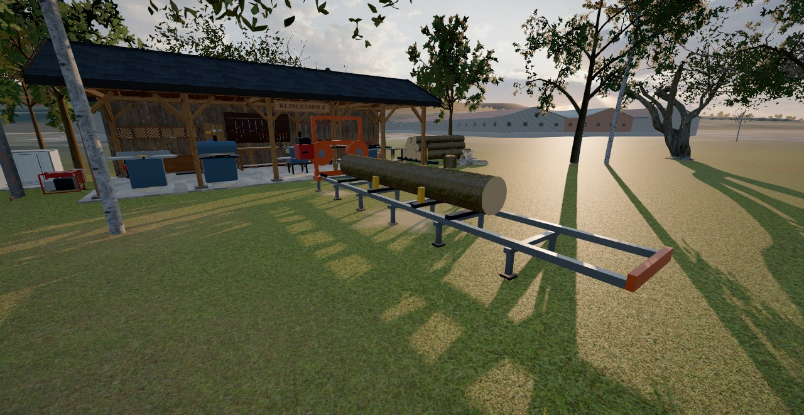
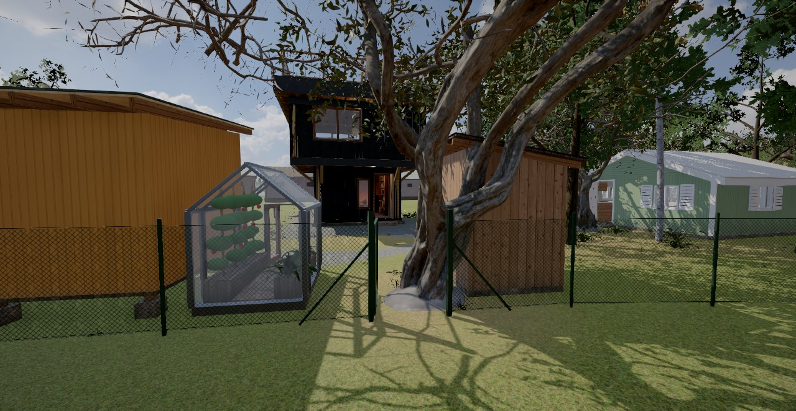
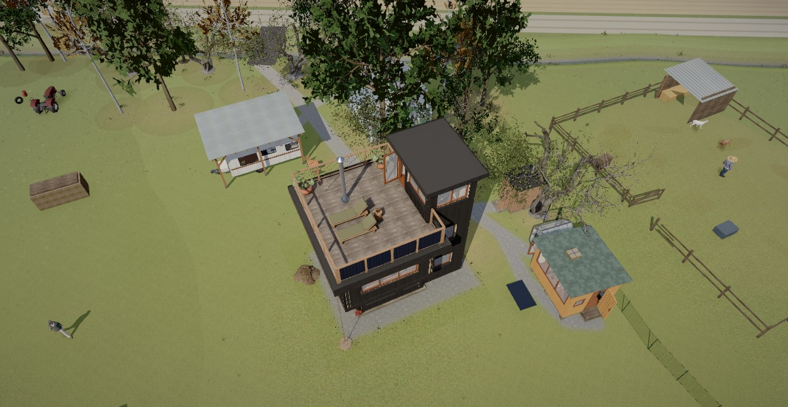

Die Rundblicke für diese Variante werden gerade berechnet und kommen mit dem nächsten Update.
Raumführung
Knapp eine Minute durch die 360°-Rundblicke (Variante Leiter, Version 14, mit der echten Umgebung von Ratscher): über die Brücke in den Garten, zur Haustür, durch Bibliothek, Arbeitsraum und Lounge bis auf die Dachterrasse mit Fernblick. Selbst gehen lässt sich alles im Tab „3D-Modell“, auch die Variante Turm.
Bilder
Standbilder aus dem aktuellen 3D-Modell, Variante ohne Turm: Leitertreppen mit Bodenluke und Dachluke, Obergeschoss rundum 0,9 m auskragend, raumhohes Westglas, Dachterrasse über dem ganzen Haus – und die bestehenden Gebäude aus den Fotos. Antippen vergrößert ein Bild.
Standbilder aus dem aktuellen 3D-Modell, Variante Turm: schlanker Wendeltreppenturm im Osten als Eingang, geschlossenes Obergeschoss mit 0,9 m Auskragung, raumhohes Westglas, Dachterrasse über dem ganzen Haus – und die bestehenden Gebäude aus den Fotos: Carport mit Wohnwagen, Holzhaus, Bungalow, Gewächshaus und Waschhaus. Antippen vergrößert ein Bild.









Was das Modell zeigt
- Ratscher nach Fotos (seit Version 16e): Die Häuser des Dorfs tragen, was die Fotos zeigen – Schiefer (oft nur oben oder am Giebel, manchmal mit weißen Rauten), Fachwerk in Dunkelbraun oder Ochsenblutrot, Putz in Pastelltönen, Scheunen aus verwitterten Brettern; Fenster mit Rahmen, Sprossen und Gardinen, Türen zur Straße, Dächer mit Überstand, Rinnen und Schornsteinen in der Farbe des Luftbilds. Am Anger die alte Schule von 1828 mit Dachreiter und Uhr (sie zeigt die Spielzeit), die Dorflinde von 1888 mit Bänken, der Dorfbrunnen und die Schulbushaltestelle; Laternen im Stil der Fotos, abends Licht in vielen Fenstern. Zäune, Hecken, Tonnen, Blumenkästen und Holzstapel werden erst geladen, wenn man in die Nähe kommt. Menü → „Dorf“. Vorlage: Fotos auf Wikimedia Commons (Aschroet 2026, CC0; Störfix 2013; Michael Köhler 1986), Straßennamen und Brunnen aus OpenStreetMap.
- Fahren (seit Version 16b): das eigene Auto (Kombi in Logan-MCV-Größe, Beige Sable) steht am Feldweg vor dem Garten, ein Allradtraktor mit Frontlader und Palettengabel an der Unteren Klinge (Menü: „Zum Auto“, „Zum Traktor“). E einsteigen, W/S Gas und Bremse (im Stand rückwärts), A/D lenken, Leertaste Handbremse, L Licht, H Hupe, V Fahrersicht, Q aussteigen; am Telefon der Kreis links und die Knöpfe am Tacho. Die Straßen und Wege kommen aus OpenStreetMap und liegen im Luftbild-Boden, Häuser, Bäume und Brückengeländer halten auf; die Karte links oben zeigt den Weg vom Garten durchs Dorf zur Klinge. Zu Fuß geht es jetzt überall hin, so weit das Gelände reicht.
- Wald an der Klinge (seit Version 16c): der Familienwald an der Unteren Klinge und der Nordwestteil des großen Walds in 3D – rund 9300 Fichten, Lärchen und Kiefern, an den gemessenen Stellen aus dem Kronenhöhenmodell und dazwischen gepflanzt; nah mit Zweigen und Totästen, weiter weg vereinfacht. Nadelstreu und Moos am Boden, gedämpftes Licht unter den Kronen, Farne, Stubben und Totholz. Die Lärchen richten sich nach dem Spieldatum: im Oktober golden, im Winter kahl, im April frisch grün. Zu Fuß oder mit dem Traktor über den Waldweg (Menü „Zum Traktor“); Wind in den Kronen, Buchfinken, Spechte.
- Fällen (seit Version 16c2): An der Unteren Klinge steht am Traktor die Forstkiste – Forsthelm mit Visier und Gehörschutz, Schnittschutzhose und -stiefel, Handschuhe, Warnjacke, Motorsäge, Keile, Maßband und Kluppe. Der Förster hat im Familienwald Bäume mit einem orangen Strich markiert: ansprechen, Fallrichtung und Rückweiche wählen, Fallkerb, Splintschnitte, Warnruf, Fällschnitt als Stechschnitt mit Bruchleiste und Halteband, Keil, Halteband zuletzt – wie gut jeder Schnitt sitzt, entscheidet, wohin der Baum fällt. Danach entasten, ablängen und vermessen; das Waldbuch (Taste B) führt durch die Schritte.
- Holz (seit Version 16d): Die gefällten und vermessenen Abschnitte liegen als Stämme im Wald. Mit dem Traktor: Gabel ganz runter (G), quer unter den Stamm fahren, heben (R) und zum Fahren zurückkippen (T). Der Rungenanhänger hängt hinter dem Traktor (K kuppelt an und ab): Stämme von der Seite über die Rungen heben und längs ablegen – sie rollen in die tiefste Lücke. Über die Gartenbrücke (unsichtbare Leitplanken halten die Räder, solange der Graben darunter liegt), dahinter zwischen den zwei Bäumen links auf den Weg, an Pavillon und Garage vorbei zum Holzlager vor der Werkstatt. Abladen wie beim echten Rungenwagen: zu Fuß hinten an einer Ecke die Rungen der anderen Seite öffnen – die Stämme rollen ab, neben dem Holzlager direkt auf dessen Kanthölzer. Mit der Gabel auf die Blockbandsäge legen, festklemmen, Einschnitt planen und Brett für Brett schneiden; die Bretter mit Stapelleisten zum Trockenstapel schichten, abdecken und beschweren, mit dem Feuchtemesser aus der Werkstatt messen und im Zeitraffer trocknen lassen – über die Trockenkammer kommen sie als eigenes Holz in die Werkstatt. Die ausgezeichneten Bäume im Wald tragen jetzt einen großen orangen Schrägstrich auf zwei Seiten; das Waldbuch (B) zeigt, wie weit und in welcher Richtung der nächste steht.
- Tag und Nacht (seit Version 16a): Die Sonne steht, wo sie über Ratscher an diesem Tag und zu dieser Stunde wirklich steht; der Mond mit seiner Phase, gut 5000 Sterne und die Milchstraße drehen sich mit. Das Licht geht fließend von Tag über Abendsonne und Dämmerung in die Nacht; im Pavillon gehen abends die Lampen an, die Werkstatt hat Licht mit Bewegungsmelder, Hubert und Ronald gehen nachts heim. Spieltag 1 ist der 1. Juni 2026 (Datum über die Uhr oben rechts). Nachts aufs Tagesbett legen und bis zum Morgen schlafen. Menü → Erleben → Tageszeit und Licht: „Tageslauf“ oder eine feste Stimmung.
- Werkstatt-Spiel (seit Version 15b): ein Stirnholz-Schneidebrett selbst bauen – Leimholzplatte Eiche aus dem Regal, Kanteln an der Tischkreissäge, Verleimen mit Zwingen und Zulagen, Dickenhobel, Scheiben, zweite Verleimung, Trommelschleifer, Fasen, Schleifen, Ölen, Brandzeichen; wahlweise Räuchern im Zelt (Räuchereiche). Mit Schutzausrüstung, Spielzeit (Uhr oben rechts, Tempo im Menü) und Werkstattbuch (Taste B). Die Blockbandsäge steht jetzt draußen vor der Werkstatt.
- Spielfigur und Menü (seit Version 15): unterwegs als Falko, Sarah oder Christoph mit Schulterkamera (oder durch die eigenen Augen: V oder Mausrad), springen, ducken, kriechen, hinlegen; Dinge kommen ins Inventar (Leiste 1–8, Rucksack I). Alle Knöpfe von früher liegen im Menü oben rechts (Esc oder M).
- Ratscher rundherum (seit Version 14): Gelände, Luftbilder, Häuser und Bäume der echten Umgebung aus offenen Geodaten (Thüringer Geoportal, OpenStreetMap, Copernicus), bis 12 km weit. In der „Draufsicht“ herauszoomen oder „Ratscher“ antippen; „Karte“ wechselt vom Luftbild zur Karte. Garten und Nachbargrundstücke bleiben wie modelliert; Feldweg und Bach liegen im Modell etwas anders als in Wirklichkeit.
- Mitspielen (seit Version 14): sitzen und liegen, Klavier spielen, Platten auflegen, Licht schalten, Dinge tragen – und vier Aufgaben mit Hubert und Ronald („Aufgaben“ im Menü oder Taste J).
- Rundherum (seit Version 11): der Bach an der Nordgrenze mit geteerter Brücke und Treppen ans Wasser, der Maschendrahtzaun zu Ronald mit Gartentür und die Holzwerkstatt Klingenholz am Südende. Die Maschinen lassen sich im 3D-Modell mit E einschalten.
- Planen von oben (seit Version 12): In der „Draufsicht“ lassen sich Bungalow, Carport, Holzhaus, Gewächshaus, Waschhaus, Garage und Werkstatt verschieben und drehen und Zäune ziehen. Über „Teilen“ wird der eigene Planstand für alle Besucher veröffentlicht. Die 360°-Rundblicke und die Bilder zeigen den Grundstand.
- Ohne Turm: Eingang durch die Haustür in der Ostwand, unter der Auskragung. Innen führt eine Leitertreppe (63°) durch eine Bodenluke in den Arbeitsraum, eine zweite durch eine verglaste Dachluke auf die Dachterrasse. Beide Luken stehen meist offen. Alle Türen öffnen nach außen.
- Das Obergeschoss kragt auf allen vier Seiten 0,9 m aus und misst 5,8 × 5,8 m: innen ca. 26 m² statt 22 m², die Dachterrasse ca. 37 m² statt 32 m². Das Haus ist mit Geländer etwa 7,1 m hoch, ohne den 8,5 m hohen Turm.
- Wärme: Ofen im EG, einwandiges Rohr bis zur Decke, Warmluftkanal mit 12-V-Lüfter in den Arbeitsraum; bei offener Bodenluke steigt warme Luft auch direkt nach oben.
- Aus dem Arbeitsraum (Augenhöhe ca. 4,6 m) sieht man nach Westen eher auf die Dächer der Nachbarschuppen. Ganz frei ist der Blick erst von der Dachterrasse (ca. 7,6 m).
- Der Schornstein muss deutlich über die Terrasse hinaus, im Modell bis ca. 8,9 m.
- Lage nach Luftbild eingemessen (±1 m): Pavillon auf der Blechgarage (A), Carport mit Wohnwagen (B) und grüner Bungalow (D) im Norden, Holzhaus (C) mit Gewächshaus gerade an der Ostgrenze, Waschhaus nördlich davon unter dem großen Baum. Die Türen von Wohnwagen und Bungalow zeigen zum Gartentor.
- Umschalten zwischen den Varianten: im 3D-Modell unten „Leiter“ und „Turm“ (oder Taste V); Bauphasen, Material und Kosten wechseln mit.
- Grafik: Beim Gehen und Drehen rechnet das Modell mit etwas geringerer Auflösung, im Stand kommt sofort das volle Bild. Die Stufe (hoch, mittel, schnell) wählt es beim Laden selbst, umschaltbar über „Grafik“.
Annahmen und offene Punkte
- Grundstück, Bäume und Nachbarbauten stammen aus dem Luftbild und der Grenzzeichnung, Höhen geschätzt.
- Platte 4 × 4 m, bewehrt, mit Frostschürze; in dieser Variante trägt sie das ganze Haus.
- Baurecht: Eine Leitertreppe als einziger Zugang zu einem Aufenthaltsraum sieht die Thüringer Bauordnung (§ 34) in der Regel nicht vor – das klären wir später mit dem Bauamt.
- Möbel und Materialien sind Vorschläge. Statik (Kragarme, Ringbalken, Dachbalken 5,8 m) ist überschlägig geprüft, nicht nachgewiesen.
Was das Modell zeigt
- Ratscher nach Fotos (seit Version 16e): Die Häuser des Dorfs tragen, was die Fotos zeigen – Schiefer (oft nur oben oder am Giebel, manchmal mit weißen Rauten), Fachwerk in Dunkelbraun oder Ochsenblutrot, Putz in Pastelltönen, Scheunen aus verwitterten Brettern; Fenster mit Rahmen, Sprossen und Gardinen, Türen zur Straße, Dächer mit Überstand, Rinnen und Schornsteinen in der Farbe des Luftbilds. Am Anger die alte Schule von 1828 mit Dachreiter und Uhr (sie zeigt die Spielzeit), die Dorflinde von 1888 mit Bänken, der Dorfbrunnen und die Schulbushaltestelle; Laternen im Stil der Fotos, abends Licht in vielen Fenstern. Zäune, Hecken, Tonnen, Blumenkästen und Holzstapel werden erst geladen, wenn man in die Nähe kommt. Menü → „Dorf“. Vorlage: Fotos auf Wikimedia Commons (Aschroet 2026, CC0; Störfix 2013; Michael Köhler 1986), Straßennamen und Brunnen aus OpenStreetMap.
- Fahren (seit Version 16b): das eigene Auto (Kombi in Logan-MCV-Größe, Beige Sable) steht am Feldweg vor dem Garten, ein Allradtraktor mit Frontlader und Palettengabel an der Unteren Klinge (Menü: „Zum Auto“, „Zum Traktor“). E einsteigen, W/S Gas und Bremse (im Stand rückwärts), A/D lenken, Leertaste Handbremse, L Licht, H Hupe, V Fahrersicht, Q aussteigen; am Telefon der Kreis links und die Knöpfe am Tacho. Die Straßen und Wege kommen aus OpenStreetMap und liegen im Luftbild-Boden, Häuser, Bäume und Brückengeländer halten auf; die Karte links oben zeigt den Weg vom Garten durchs Dorf zur Klinge. Zu Fuß geht es jetzt überall hin, so weit das Gelände reicht.
- Wald an der Klinge (seit Version 16c): der Familienwald an der Unteren Klinge und der Nordwestteil des großen Walds in 3D – rund 9300 Fichten, Lärchen und Kiefern, an den gemessenen Stellen aus dem Kronenhöhenmodell und dazwischen gepflanzt; nah mit Zweigen und Totästen, weiter weg vereinfacht. Nadelstreu und Moos am Boden, gedämpftes Licht unter den Kronen, Farne, Stubben und Totholz. Die Lärchen richten sich nach dem Spieldatum: im Oktober golden, im Winter kahl, im April frisch grün. Zu Fuß oder mit dem Traktor über den Waldweg (Menü „Zum Traktor“); Wind in den Kronen, Buchfinken, Spechte.
- Fällen (seit Version 16c2): An der Unteren Klinge steht am Traktor die Forstkiste – Forsthelm mit Visier und Gehörschutz, Schnittschutzhose und -stiefel, Handschuhe, Warnjacke, Motorsäge, Keile, Maßband und Kluppe. Der Förster hat im Familienwald Bäume mit einem orangen Strich markiert: ansprechen, Fallrichtung und Rückweiche wählen, Fallkerb, Splintschnitte, Warnruf, Fällschnitt als Stechschnitt mit Bruchleiste und Halteband, Keil, Halteband zuletzt – wie gut jeder Schnitt sitzt, entscheidet, wohin der Baum fällt. Danach entasten, ablängen und vermessen; das Waldbuch (Taste B) führt durch die Schritte.
- Holz (seit Version 16d): Die gefällten und vermessenen Abschnitte liegen als Stämme im Wald. Mit dem Traktor: Gabel ganz runter (G), quer unter den Stamm fahren, heben (R) und zum Fahren zurückkippen (T). Der Rungenanhänger hängt hinter dem Traktor (K kuppelt an und ab): Stämme von der Seite über die Rungen heben und längs ablegen – sie rollen in die tiefste Lücke. Über die Gartenbrücke (unsichtbare Leitplanken halten die Räder, solange der Graben darunter liegt), dahinter zwischen den zwei Bäumen links auf den Weg, an Pavillon und Garage vorbei zum Holzlager vor der Werkstatt. Abladen wie beim echten Rungenwagen: zu Fuß hinten an einer Ecke die Rungen der anderen Seite öffnen – die Stämme rollen ab, neben dem Holzlager direkt auf dessen Kanthölzer. Mit der Gabel auf die Blockbandsäge legen, festklemmen, Einschnitt planen und Brett für Brett schneiden; die Bretter mit Stapelleisten zum Trockenstapel schichten, abdecken und beschweren, mit dem Feuchtemesser aus der Werkstatt messen und im Zeitraffer trocknen lassen – über die Trockenkammer kommen sie als eigenes Holz in die Werkstatt. Die ausgezeichneten Bäume im Wald tragen jetzt einen großen orangen Schrägstrich auf zwei Seiten; das Waldbuch (B) zeigt, wie weit und in welcher Richtung der nächste steht.
- Tag und Nacht (seit Version 16a): Die Sonne steht, wo sie über Ratscher an diesem Tag und zu dieser Stunde wirklich steht; der Mond mit seiner Phase, gut 5000 Sterne und die Milchstraße drehen sich mit. Das Licht geht fließend von Tag über Abendsonne und Dämmerung in die Nacht; im Pavillon gehen abends die Lampen an, die Werkstatt hat Licht mit Bewegungsmelder, Hubert und Ronald gehen nachts heim. Spieltag 1 ist der 1. Juni 2026 (Datum über die Uhr oben rechts). Nachts aufs Tagesbett legen und bis zum Morgen schlafen. Menü → Erleben → Tageszeit und Licht: „Tageslauf“ oder eine feste Stimmung.
- Werkstatt-Spiel (seit Version 15b): ein Stirnholz-Schneidebrett selbst bauen – Leimholzplatte Eiche aus dem Regal, Kanteln an der Tischkreissäge, Verleimen mit Zwingen und Zulagen, Dickenhobel, Scheiben, zweite Verleimung, Trommelschleifer, Fasen, Schleifen, Ölen, Brandzeichen; wahlweise Räuchern im Zelt (Räuchereiche). Mit Schutzausrüstung, Spielzeit (Uhr oben rechts, Tempo im Menü) und Werkstattbuch (Taste B). Die Blockbandsäge steht jetzt draußen vor der Werkstatt.
- Spielfigur und Menü (seit Version 15): unterwegs als Falko, Sarah oder Christoph mit Schulterkamera (oder durch die eigenen Augen: V oder Mausrad), springen, ducken, kriechen, hinlegen; Dinge kommen ins Inventar (Leiste 1–8, Rucksack I). Alle Knöpfe von früher liegen im Menü oben rechts (Esc oder M).
- Ratscher rundherum (seit Version 14): Gelände, Luftbilder, Häuser und Bäume der echten Umgebung aus offenen Geodaten (Thüringer Geoportal, OpenStreetMap, Copernicus), bis 12 km weit. In der „Draufsicht“ herauszoomen oder „Ratscher“ antippen; „Karte“ wechselt vom Luftbild zur Karte. Garten und Nachbargrundstücke bleiben wie modelliert; Feldweg und Bach liegen im Modell etwas anders als in Wirklichkeit.
- Mitspielen (seit Version 14): sitzen und liegen, Klavier spielen, Platten auflegen, Licht schalten, Dinge tragen – und vier Aufgaben mit Hubert und Ronald („Aufgaben“ im Menü oder Taste J).
- Rundherum (seit Version 11): der Bach an der Nordgrenze mit geteerter Brücke und Treppen ans Wasser, der Maschendrahtzaun zu Ronald mit Gartentür und die Holzwerkstatt Klingenholz am Südende. Die Maschinen lassen sich im 3D-Modell mit E einschalten.
- Planen von oben (seit Version 12): In der „Draufsicht“ lassen sich Bungalow, Carport, Holzhaus, Gewächshaus, Waschhaus, Garage und Werkstatt verschieben und drehen und Zäune ziehen. Über „Teilen“ wird der eigene Planstand für alle Besucher veröffentlicht. Die 360°-Rundblicke und die Bilder zeigen den Grundstand.
- Eingang über den Turm an der Ostseite: Tür nach Osten, geradeaus in die Bibliothek, links die Wendeltreppe (Ø 2,16 m) zum Arbeitsraum und weiter in den verglasten Turmkopf mit Tür zur Dachterrasse. Alle Türen öffnen nach außen; innen bleiben 11,7 m² (EG) und 22 m² (OG) frei.
- Wärme: Ofen im EG, einwandiges Rohr bis zur Decke, Warmluftkanal mit 12-V-Lüfter in den Arbeitsraum; der Turm ist ein unbeheizter Windfang mit dichten Türen.
- Aus dem Arbeitsraum (Augenhöhe ca. 4,6 m) sieht man nach Westen eher auf die Dächer der Nachbarschuppen. Ganz frei ist der Blick erst von der Dachterrasse (ca. 7,6 m).
- Der Schornstein muss deutlich über die Terrasse hinaus, im Modell bis ca. 8,9 m.
- Lage nach Luftbild eingemessen (±1 m): Pavillon auf der Blechgarage (A), Carport mit Wohnwagen (B) und grüner Bungalow (D) im Norden, Holzhaus (C) mit Gewächshaus gerade an der Ostgrenze, Waschhaus nördlich davon unter dem großen Baum. Die Türen von Wohnwagen und Bungalow zeigen zum Gartentor.
- Fassade: Material und Farbe von Haus, Turm und Fensterrahmen lassen sich im 3D-Modell über „Fassade“ ausprobieren.
- Grafik: Beim Gehen und Drehen rechnet das Modell mit etwas geringerer Auflösung, im Stand kommt sofort das volle Bild. Die Stufe (hoch, mittel, schnell) wählt es beim Laden selbst, umschaltbar über „Grafik“.
- Die Baumkrone östlich des Pavillons reicht an den Turm, Rückschnitt einplanen.
Annahmen
- Grundstück, Bäume und Nachbarbauten stammen aus dem Luftbild und der Grenzzeichnung, Höhen geschätzt.
- Platte 4 × 4 m, bewehrt, mit Frostschürze. Das Garagendach im Luftbild misst ca. 4,5 × 6,3 m; ist die Platte größer, kann der Turm darauf stehen.
- Landschaft in der Ferne nur angedeutet, kein Geländemodell.
- Möbel und Materialien sind Vorschläge. Statik (Kragarme, Ringbalken, Turm) und Baurecht (Gebäudeklasse 1, Abstandsflächen, Verfahrensfreiheit) sind offen.
Quellen und Lizenzen
- Fotomaterialien (Holz, Lehmputz, Schiefer, Kies, Rasen …) und Umgebungslicht: Poly Haven und ambientCG, CC0
- 3D-Möbel, Gartenmöbel und Gerät (Regentonne, Stiefel, Kisten, Leiter, Kompost, Spaten, Reifen, Kanister), Pflanzen, Tanne, Gras und Farne: Poly Haven, CC0
- Himmel je Tageszeit (Fotos) und Holz-, Wellplatten- und Blechtexturen: Poly Haven, CC0
- Laubbäume und Wiesengras: ez-tree von Daniel Greenheck, MIT-Lizenz
- Geräusche ohne Namensnennungspflicht: Kenney (CC0), radio aporee / archive.org (Public Domain)
- Hubert („Construction_Male_01“ ohne Helm und Werkzeuggürtel, mit dem Schnurrbart von „Medical_Male_03“ und umgefärbter Hose) und Ronald („Gardener_Male_01“) mit den Bewegungen der Spielfiguren: Microsoft Rocketbox Avatar Library, MIT-Lizenz, Copyright (c) 2020 Microsoft (Lizenztext unten)
- Ziegen: „goat animation“ von dinomaster, https://sketchfab.com/models/6efcfd71eb54471da0ddeccc79336d80 (CC BY 4.0), eingefärbt; Laufen und Grasen nachträglich animiert
- Huberts Traktor: „Weathered Tractor“ von ArtDmitriyK, https://sketchfab.com/models/d891c103cddd44b69d1357c832d9ad56 (CC BY 4.0), vereinfacht
- Stimmen von Hubert und Ronald: Microsoft-Edge-Vorlesestimmen („Conrad“ und „Florian“, neuronal), erzeugt mit edge-tts – für dieses private, nicht kommerzielle Modell
- Klavier, E-Piano, Ukulele und die Arbeitsgeräusche der Aufgaben: im Browser synthetisiert
- Nachthimmel: Sterne bis zur 6. Größe aus dem Hipparcos-Katalog (ESA) und Umrisse der Milchstraße, aufbereitet von Olaf Frohn für d3-celestial, BSD-3-Clause-Lizenz, Copyright (c) 2015 Olaf Frohn, https://github.com/ofrohn/d3-celestial (Lizenztext unten); Sonne und Mond selbst berechnet (NOAA-Formeln, Kurzreihen des Astronomical Almanac)
- Spielfiguren (Mann: „Delivery_Male_01“, Frau: „Female_Adult_04“) und ihre Bewegungen Stehen, Gehen, Laufen, Rennen, Hocken, Sitzen, Winken, Arbeiten: Microsoft Rocketbox Avatar Library, MIT-Lizenz, Copyright (c) 2020 Microsoft, https://github.com/microsoft/Microsoft-Rocketbox (Lizenztext unten)
- Weitere Bewegungen der Spielfiguren (Springen, Kriechen, Liegen, Tragen, Hacken, Aufheben, Knien, Gießen): Mesh2Motion-Animationsbibliothek von Scott Petrovic, CC0, https://github.com/scottpetrovic/mesh2motion-app – auf die Figuren übertragen
- Umgebung von Ratscher – Luftbilder (DOP 20 cm, Farbinfrarot), Geländemodell DGM1 und Oberflächenmodell DOM1: © GDI-Th, Datenlizenz Deutschland – Namensnennung – Version 2.0 (dl-de/by-2-0), https://www.geoportal-th.de
- Karte, Gebäudegrundrisse, Gewässer und Namen: © OpenStreetMap-Mitwirkende, Open Database License (ODbL), https://www.openstreetmap.org/copyright
- Fernes Gelände: Copernicus DEM GLO-30 © DLR e.V. 2010–2014 und © Airbus Defence and Space GmbH 2014–2018, bereitgestellt im Rahmen von COPERNICUS durch die Europäische Union und die ESA
- Gebäude (Dachformen aus dem Oberflächenmodell), Bäume (aus dem Kronenhöhenmodell) und Kartenbild: daraus selbst berechnet
- Dorf nach Fotos (V16e): Vorlage waren die Fotos der Kategorie „Ratscher (Schleusingen)“ auf Wikimedia Commons – Aschroet (2026, CC0), Störfix („Ratscher-Alte-Schule.jpg“, 2013, CC BY-SA 3.0 DE), Michael Köhler (1986, 1997) –; die Fotos selbst sind nicht Teil des Modells. Brunnen, Bushaltestelle, Bänke und Straßennamen: OpenStreetMap (ODbL)
- Schallplatte: Gymnopédie Nr. 1 – Erik Satie, gespielt von Robin Alciatore (Musopen), gemeinfrei (Public Domain), Wikimedia Commons: https://commons.wikimedia.org/wiki/File:Erik_Satie_-_gymnopedies_-_la_1_ere._lent_et_douloureux.ogg
- Schallplatte: Gnossienne Nr. 1 – Erik Satie, gespielt von „La Pianista“, gemeinfrei (Public Domain), Wikimedia Commons: https://commons.wikimedia.org/wiki/File:Satie_-_Gnossienne_1.ogg
- Schallplatte: Maple Leaf Rag – Scott Joplin, Klavierrolle von 1916, gemeinfrei (Public Domain), Wikimedia Commons: https://commons.wikimedia.org/wiki/File:Maple_leaf_rag_-_played_by_Scott_Joplin_1916_V2.ogg
- step_stairs_01…06.mp3, step_deck_01…06.mp3: „Walking in and out through wooden stairs“ von gallaecio (OpenGameArt), nach Aufnahmen von Rutger Muller (rutgermuller.nl, Public Domain) – CC BY-SA 3.0 – Quelle: https://opengameart.org/content/walking-in-and-out-through-wooden-stairs
- step_gravel_01…08.mp3: „Walkingongravel.ogg“ von Secretlondon (Wikimedia Commons) – CC BY-SA 3.0 – Quelle: https://commons.wikimedia.org/wiki/File:Walkingongravel.ogg
- step_grass_01…08.mp3: „Nature Sounds Pack“ (FootstepGrass) von Antoine Goumain (antoinemax, OpenGameArt) – CC BY 4.0 – Quelle: https://opengameart.org/content/nature-sounds-pack
- amb_dusk.mp3: XC877442 (xeno-canto) von Latal – CC BY 4.0 – Quelle: https://xeno-canto.org/877442
- amb_wind.mp3: „Wind Through The Trees“ (Troon, Cornwall) von Jakob Glock (radio aporee) – CC BY 3.0 – Quelle: https://archive.org/details/aporee_30781_35402
- bird_blackbird_02.mp3: XC483999 (xeno-canto) von Marie-Lan Taÿ Pamart – CC BY-SA 4.0 – Quelle: https://xeno-canto.org/483999
- bird_blackbird_03.mp3: XC912543 (xeno-canto) von Latal – CC BY 4.0 – Quelle: https://xeno-canto.org/912543
- bird_greattit_01.mp3: XC755602 (xeno-canto) von Fiete Nörenberg – CC BY 4.0 – Quelle: https://xeno-canto.org/755602
- bird_greattit_02.mp3: XC701658 (xeno-canto) von Benoît Van Hecke – CC BY-SA 4.0 – Quelle: https://xeno-canto.org/701658
- bird_greattit_03.mp3: XC960972 (xeno-canto) von Camille Vacher – CC BY 4.0 – Quelle: https://xeno-canto.org/960972
- bird_chaffinch_01.mp3, bird_chaffinch_02.mp3: XC794236 (xeno-canto) von Benoît Van Hecke – CC BY-SA 4.0 – Quelle: https://xeno-canto.org/794236
- bird_chaffinch_03.mp3: XC482887 (xeno-canto) von Marie-Lan Taÿ Pamart – CC BY-SA 4.0 – Quelle: https://xeno-canto.org/482887
- bird_robin_01.mp3, bird_robin_02.mp3: XC249306 (xeno-canto) von Zdeněk Vermouzek – CC BY-SA 4.0 – Quelle: https://xeno-canto.org/249306
- bird_robin_03.mp3: XC103717 (xeno-canto) von Alexander Kurthy – CC BY-SA 4.0 – Quelle: https://xeno-canto.org/103717
- crow_01.mp3: XC511133 (xeno-canto) von Marie-Lan Taÿ Pamart – CC BY-SA 4.0 – Quelle: https://xeno-canto.org/511133
- crow_02.mp3: XC484782 (xeno-canto) von Marie-Lan Taÿ Pamart – CC BY-SA 4.0 – Quelle: https://xeno-canto.org/484782
- crow_03.mp3: XC533768 (xeno-canto) von Marie-Lan Taÿ Pamart – CC BY-SA 4.0 – Quelle: https://xeno-canto.org/533768
- woodpecker_01…03.mp3: XC879162 (xeno-canto) von Latal – CC BY 4.0 – Quelle: https://xeno-canto.org/879162
- owl_01.mp3: XC982285 (xeno-canto) von Jurijs Ješkins – CC BY 4.0 – Quelle: https://xeno-canto.org/982285
- owl_02.mp3: XC756912 (xeno-canto) von Klaus-Jürgen Papke – CC BY-SA 4.0 – Quelle: https://xeno-canto.org/756912
- owl_03.mp3: XC565861 (xeno-canto) von Alvaro Ortiz Troncoso – CC BY-SA 4.0 – Quelle: https://xeno-canto.org/565861
- bells_01.mp3: „Bredereiche – church bells, night ambience“ von udo noll (radio aporee) – CC BY-SA 3.0 – Quelle: https://archive.org/details/aporee_32584_37462
- slide_open_01.mp3: ezwa (PDSounds, via Wikimedia Commons) – Public Domain – https://commons.wikimedia.org/wiki/File:Sliding_door_of_veranda_opening.ogg
- amb_birds_day.mp3: avoelzing (radio aporee) – Public Domain (PD Mark) – https://archive.org/details/aporee_44034_50101
- bird_blackbird_01.mp3: Oona Räisänen (Mysid) – Public Domain – https://commons.wikimedia.org/wiki/File:Turdus_merula_2.ogg
- bells_02.mp3: avoelzing (radio aporee) – Public Domain (PD Mark) – https://archive.org/details/aporee_43948_50010
- step_wood_*: Kenney (kenney.nl, „RPG Audio“)
- door_open_*, door_close_*: qubodup (OpenGameArt, „Door Open, Door Close Set“)
- amb_stove.mp3: pagdev (OpenGameArt, „Fireplace Sound loop“)
- goat_01…08.mp3: „Gut Adolfshof, Hämelerwald – Zicklein“ von jm-f (radio aporee) – Public Domain (PD Mark) – Quelle: https://archive.org/details/aporee_56429_64547
- tractor_01.mp3: „Niederrieden – Fendt Dieselross“ von Andreas Usenbenz (radio aporee) – Public Domain (PD Mark) – Quelle: https://archive.org/details/aporee_15129_17652
- voice/*.mp3: Sprachsynthese mit Piper (MIT); Stimmen „thorsten“ (Thorsten Müller, CC0) und „karlsson“ (M-AILABS Speech Dataset, frei nutzbar)
- Bach und Feldweg am Garten (feat/bach): Lauf nach dem Geländemodell DGM1 Thüringen 1 m (© GDI-Th, CC BY 4.0, bezogen über easygeodata.de) und OpenStreetMap (© OpenStreetMap-Mitwirkende, ODbL 1.0).
- Flächenart aus OpenStreetMap (© OpenStreetMap-Mitwirkende, ODbL 1.0) und dem Luftbild Thüringen (© GDI-Th, dl-de/by-2-0); dazu Basis-DLM und Höhenmodell Thüringen (© GDI-Th, dl-de/by-2-0).
- Bewuchs – Gräser, Wildblumen, Sträucher, Beet- und Zierpflanzen, Feldfrüchte, ihr Jahr und die Pflege der Flächen (bewuchs/bw_arten.js): eigene Zusammenstellung nach den Floren (Rothmaler, Flora von Thüringen, Oberdorfer), Wikipedia, der Pflanzen-Datenbank des Gartenplaners und Fachstellen (LWG Bayern, HLNUG, TLLLR, LfULG Sachsen, Hessen Mobil, LSBB Sachsen-Anhalt); Blüh-, Reife- und Erntezeiten nach den phänologischen Beobachtungen des Deutschen Wetterdienstes (Quelle: Deutscher Wetterdienst, DWD Climate Data Center); Anbauflächen der Feldfrüchte: Thüringer Landesamt für Statistik (Bodennutzung 2025); der Blumenatlas (bewuchs/blumen.png), der Beetatlas (bewuchs/beete.png) und der Ackeratlas (bewuchs/acker.png) sind eigene, prozedural gerechnete Zeichnungen
- Busse nach dem echten Fahrplan (Linien, Haltestellen, Fahrzeiten): gtfs.de – GTFS für Deutschland, Daten bereitgestellt von DELFI e.V. (Durchgängige elektronische Fahrgastinformation), Lizenz CC BY 4.0, gtfs.de; Wege der Busse auf den Straßen, die Steige der Zentralhaltestelle Schleusingen und die Wartehäuschen an Haltestellen (Ratscher, Schleusebrücke; Schleusingen; Kloster Veßra …) von © OpenStreetMap-Mitwirkende (ODbL 1.0); Schulferien Thüringen: Thüringer Ministerium für Bildung, Wissenschaft und Kultur.
- Dorfbewohner beim Skat- und Rommé-Abend und am Feuer (Gerhard „Male_Adult_03“, Manfred „Male_Adult_14“, Wolfgang „Male_Adult_05“, Uwe „Male_Adult_13“, Katrin „Female_Adult_09“, Ingrid „Business_Female_02“, Jens „Male_Adult_08“, Heike „Female_Adult_13“) mit den Bewegungen der Spielfiguren: Microsoft Rocketbox Avatar Library, MIT-Lizenz, Copyright (c) 2020 Microsoft, https://github.com/microsoft/Microsoft-Rocketbox
- Fahrt über das Quadrat hinaus (Schleusingen, Kloster Veßra): Straßen, Orte, Ortstafeln © OpenStreetMap-Mitwirkende (ODbL 1.0); Längsprofile aus den Welt-Kacheln (© GDI-Th CC BY 4.0, Copernicus DEM GLO-30 © DLR e.V. 2010–2014 und © Airbus Defence and Space GmbH 2014–2018, bereitgestellt im Rahmen von COPERNICUS durch EU und ESA).
- Spielfiguren Sarah („Female_Adult_04“ mit den Haaren von „Female_Party_01“, brünett gefärbt) und Christoph („Male_Adult_09“ mit dem Kopf von „Sports_Male_01“; Mütze und Ohrhörer im Modell gebaut): Microsoft Rocketbox Avatar Library, MIT-Lizenz, Copyright (c) 2020 Microsoft, github.com/microsoft/Microsoft-Rocketbox (Lizenztext unten)
- Gebäude von außen (Türen, Fenster, Durchgänge, Höfe): Durchgänge und Eingänge © OpenStreetMap-Mitwirkende (ODbL 1.0); Toreinfahrten in die Höfe der Altstadt nach den Grundrissen angenommen.
- Grenzland, Nacht: Grillen „Crickets in Garonne River, evening“ von Claire Sauvaget (radio aporee, Quelle, gemeinfrei – Public Domain Mark) – Ausschnitt, Hochpass, nahtlose Schleife (snd/nacht/grillen.mp3); Glockenschlag aus „Strike of the hour of St. Georgen church in St. Gallen SG 01“ von Martin Thurnherr (Wikimedia Commons, Datei, CC BY-SA 4.0) – der letzte Schlag mit Nachklang, normalisiert, als snd/nacht/glocke_schlag.mp3 ebenfalls unter CC BY-SA 4.0.
- Grenzland, Musik im Radio: echte Songs unter freien Lizenzen – „Sonzis FM“ von Pipe Choir (Radio Zweitakt, Quelle, CC BY 4.0); „Ate A Pizza“ von The Crypts! (Radio Zweitakt, Quelle, CC BY 4.0); „Big Car Theft“ von Jason Shaw (Funkloch FM, Quelle, CC BY 3.0 US); „Self Explainitory“ von Black Ant (Funkloch FM, Quelle, CC BY 3.0); „This Love's Got to Change“ von Black Math (Neonfunk, Quelle, CC BY 3.0); „Street Dancing“ von Timecrawler 82 (Neonfunk, Quelle, CC BY 4.0); „Meanwhile in Bavaria“ von Kevin MacLeod (incompetech.com) (Kirmeswelle, Quelle, CC BY 4.0); „Ultra Polka“ von Kevin MacLeod (incompetech.com) (Kirmeswelle, Quelle, CC BY 4.0). Bearbeitet: Stille an den Enden entfernt, Lautheit angeglichen (−16 LUFS), als MP3 96 kbit/s (snd/radio/).
- Grenzland, mehr Musik im Radio (die Dateien im Klang-Archiv pavillon-ton, Lautheit angeglichen, lange Songs auf 4:30 gekürzt): „Boreal“ von Salmo (Radio Zweitakt, Quelle, CC BY 4.0); „Radio Song“ von Mild Wild (Radio Zweitakt, Quelle, CC BY 4.0); „Get It Right / Get It Tight“ von voyageurs (Radio Zweitakt, Quelle, CC BY 3.0); „Versailles“ von Pierce Murphy (Radio Zweitakt, Quelle, CC BY 4.0); „Savior“ von Pipe Choir (Radio Zweitakt, Quelle, CC BY 4.0); „Dark Spots“ von A Crooked Pulse (Radio Zweitakt, Quelle, CC BY 4.0); „Roy“ von JBlanked (Funkloch FM, Quelle, CC BY 4.0); „Lemon Meringue Pie“ von Aitua (Funkloch FM, Quelle, CC0 1.0); „In Tune (J. Glaze Remix)“ von Kellee Maize & J. Glaze Prod (Funkloch FM, Quelle, CC BY 4.0); „Michael Vendette“ von Black Ant (Funkloch FM, Quelle, CC BY 3.0); „Forever Believe“ von Jason Shaw (Funkloch FM, Quelle, CC BY 3.0 US); „Night Rave“ von Jason Shaw (Funkloch FM, Quelle, CC BY 3.0 US); „The Perfect Planet“ von Monroeville Music Center (Neonfunk, Quelle, CC BY 3.0); „uRLauB“ von Phillip Gross (Neonfunk, Quelle, CC BY 4.0); „New Touch“ von Airglow (Neonfunk, Quelle, CC BY 4.0); „Corner of the room (feat. Silvia)“ von Timecrawler 82 (Neonfunk, Quelle, CC BY 4.0); „Love Love What Can You Say Love“ von Origami Repetika (Neonfunk, Quelle, CC BY 4.0); „Usual Flight“ von Andrew R Codeman (Neonfunk, Quelle, CC BY 4.0); „Four Beers' Polka“ von Kevin MacLeod (incompetech.com) (Kirmeswelle, Quelle, CC BY 4.0); „Glee Club Polka“ von Kevin MacLeod (incompetech.com) (Kirmeswelle, Quelle, CC BY 4.0); „Dvorak Polka“ von Kevin MacLeod (incompetech.com) (Kirmeswelle, Quelle, CC BY 4.0); „Bushwick Tarantella“ von Kevin MacLeod (incompetech.com) (Kirmeswelle, Quelle, CC BY 4.0); „Hyperfun“ von Kevin MacLeod (incompetech.com) (Kirmeswelle, Quelle, CC BY 4.0); „Waunobe March“ von Kevin MacLeod (incompetech.com) (Kirmeswelle, Quelle, CC BY 4.0).
- Grenzland, Filmmusik bei Missionen: Kevin MacLeod (incompetech.com), CC BY 4.0 – „Crypto“ (Anschleichen, Beobachten, Quelle); „Hot Pursuit“ (Flucht, Fahndung (bis zwei Sterne), Quelle); „Ready Aim Fire“ (Flucht, Fahndung (ab drei Sternen), Quelle); „SCP-x6x (Hopes)“ (Rückblende 1989, Quelle); „Danse Macabre - Big Hit 1“ (Stich: eine Mission beginnt, Quelle); „Loping Sting“ (Stich: geschafft, Quelle); „Der Kleber Sting“ (Stich: gescheitert, Quelle). Bearbeitet: Lautheit angeglichen, als MP3; Dateien im Klang-Archiv pavillon-ton.
- Grenzland, Klang der Orte: Aufnahmen aus radio aporee (archive.org), gemeinfrei (Public Domain Mark 1.0) – Dorf – Ratscher und der Garten: Peter Cusack (radio aporee) (Stare in einer Eiche, Dorf im Spreewald (Leipe), Quelle); Talsperre: Frank Schulte (radio aporee) (Ufer eines Sees, Enten (Essen-Heisingen), Quelle); Stadt – Schleusingen: oriolus (radio aporee) (Marktplatz, Leute, ein Lieferwagen (Leipzig), Quelle); Wald: dschulz (radio aporee) (Sommerwald, Vögel, Wind (Bayerischer Wald), Quelle); Klinge: blackhole-factory (radio aporee) (Bach im Fichtenwald (Höllegrundsbach), Quelle). Bearbeitet: Ausschnitte von 24 s als nahtlose Schleifen, Lautheit angeglichen; Dateien im Klang-Archiv pavillon-ton.
- Grenzland, Weihnachtsmarkt in Schleusingen: Kevin MacLeod (incompetech.com), CC BY 4.0 – „Silent Night“ (Quelle); „Oh, Christmas Tree“ (Quelle); „Adeste Fideles Waltz“ (Quelle); „We Wish you a Merry Christmas“ (Quelle); „Jingle Bells“ (Quelle). Bearbeitet: Lautheit angeglichen, als MP3; Dateien im Klang-Archiv pavillon-ton.
- Grenzland, Grenz-Zone am Grünen Band bei Eisfeld: Gelände DGM1 © Bayerische Vermessungsverwaltung – www.geodaten.bayern.de (CC BY 4.0) und Copernicus DEM GLO-30 (© DLR e.V. 2010–2014 und © Airbus Defence and Space GmbH 2014–2018, bereitgestellt im Rahmen von COPERNICUS durch EU und ESA); Luftbilder © GDI-Th (CC BY 4.0) und © Bayerische Vermessungsverwaltung (DOP20, CC BY 4.0); Kolonnenweg, Wege, Grenze, Orte © OpenStreetMap-Mitwirkende (ODbL 1.0); Anfahrt berechnet mit OSRM auf OpenStreetMap-Daten. Texte der Tafeln in eigenen Worten nach Bundesarchiv („Grenzübergangsstellen für den Bezirk Suhl“), Wikipedia („Fortifications of the inner German border“) und Wikivoyage („Grünes Band“).
- Karte und Ziel (feat/karte): Orte, Berge, Wälder, Gewässer und Bauwerke Südthüringens aus Wikidata (CC0); Kreisgrenzen © OpenStreetMap-Mitwirkende (ODbL 1.0), abgerufen über Nominatim; Luftbilder der Karte wie die Kacheln der Welt (© GDI-Th, CC BY 4.0). Hausnummern: Hauskoordinaten Thüringen (INSPIRE Adressen) © GDI-Th, CC BY 4.0.
- Läden in Schleusingen (feat/laeden): Gebäude, Namen, Öffnungszeiten, Eingänge, Parkplätze mit Fahrgassen und der Drive-in © OpenStreetMap-Mitwirkende (ODbL 1.0); Gebäudeteile und Höhen aus ETHOS.BUILDA (Forschungszentrum Jülich, ODbL 1.0); Vorbauten und Eingänge, wo OSM keine kennt, nach dem Luftbild DOP 2024 © GDI-Th (dl-de/by-2-0). Die Namen stehen in schlichter Schrift – ohne Logo, Hausfarbe oder Markenschrift.
- Pflanzendaten des Gartenplaners (gartenplaner/pflanzen.json, regeln.json, gilden.json): eigene Zusammenstellung, Belege je Pflanze, Regel und Gilde in den Dateien (u. a. Julius Kühn-Institut, Bundessortenamt, Bayerische Landesanstalten LWG und LWF, LfULG Sachsen, LTZ Augustenberg, Plants For A Future, RHS); Grenzabstände nach dem Thüringer Nachbarrechtsgesetz (ThürNRG, §§ 44–53) in eigenen Worten – ohne Gewähr, keine Rechtsberatung
- Natürliche Stimmen (Einstellungen → KI-Gespräche → Stimme „Natürlich“, werden erst bei Bedarf von Hugging Face geladen): Piper (rhasspy, MIT) mit den Stimmen aus rhasspy/piper-voices (MIT): „Thorsten“ (Thorsten-Voice, Thorsten Müller, CC0), Hörbuch-Stimmen aus Multilingual LibriSpeech (OpenSLR 94, CC BY 4.0, Sprecherinnen und Sprecher von LibriVox), zur Wahl auch Thorsten emotional und Kerstin (CC0), Ramona, Eva K. und Karlsson (M-AILABS Speech Dataset); gesprochen mit onnxruntime-web (Microsoft, MIT); Lautschrift: eSpeak NG und piper-phonemize als eigenes Programm (GPL-3.0-or-later, Lizenz und Quellen: piper/LICENSE-espeak-ng.txt)
- Schleusingen (Altstadt): Gebäude, Straßen, Orte © OpenStreetMap-Mitwirkende (ODbL 1.0); Gelände und Luftbild der Welt-Kacheln: © GDI-Th (CC BY 4.0), Copernicus DEM GLO-30 © DLR e.V. 2010–2014 und © Airbus Defence and Space GmbH 2014–2018 (bereitgestellt im Rahmen von COPERNICUS durch EU und ESA), Landbedeckung © ESA WorldCover 2021 (CC BY 4.0). Fassaden, Dächer und Wahrzeichen nach Fotos von Wikimedia Commons (u. a. Rathaus, St. Johannis, Bertholdsburg, Markt; 2008–2025, CC BY-SA) – als Vorlage, nicht als Bild verwendet.
- Schleusingen nach Ansicht (feat/schleusingen-ansicht): Wandfarben, Material, Schiefer, Fachwerk und Dächer von Hand nach privaten Ansichten von der Straße gelesen; am Markt die Lage von Bänken, Pflanzkübeln, Figur und Eimer nach dem Luftbild DOP 2024 © GDI-Th (dl-de/by-2-0). Die sitzende Figur ist eine allgemeine Figur, kein Bildnis.
- Straßenbäume und Grün in Schleusingen: Lage der Bäume, Hecken und Grünstreifen nach den Orthophotos DOP 20 cm in Farbe und Infrarot © GDI-Th (Datenlizenz Deutschland – Namensnennung 2.0) und OpenStreetMap © OpenStreetMap-Mitwirkende (ODbL 1.0); Arten, Größe und Abstand der Alleen an privaten Ansichten von der Straße geprüft.
- Bäume an der L 1625 und L 3004 südlich von Ratscher, die dem Kronenhöhenmodell fehlen: Lage nach den Orthophotos DOP 20 cm © GDI-Th (Datenlizenz Deutschland – Namensnennung 2.0), Straßen nach OpenStreetMap (ODbL 1.0); an privaten Ansichten von der Straße geprüft.
- Straßen (feat/strassen): Markierung, Bordsteine und Gehwege nach Straßenklasse, Breite und Ortslage; Leitpfosten, Schutzplanken, Verkehrszeichen, Straßenlaternen, Strommasten und Leitungen nach © OpenStreetMap-Mitwirkende (ODbL 1.0) – Tempolimits, Schutzplanken, Masten, Stationszeichen und Bahnübergänge wie dort kartiert; Leitpfosten, Vorfahrtszeichen, Kurventafeln und die meisten Laternen nach Regel gesetzt, nicht vermessen. Die Modelle sind eigene; die Verkehrszeichen folgen dem amtlichen Katalog (StVO, gemeinfrei).
- Suhl 1989, die Nacht am Tor – Sprechchöre, Murmeln der Menge und Megafon: mit Piper (rhasspy, MIT) aus vielen Stimmen gemischt (
tools/suhl/ton1989.py): Hörbuch-Stimmen aus Multilingual LibriSpeech (OpenSLR 94, CC BY 4.0, Sprecherinnen und Sprecher von LibriVox, Modell de_DE-mls-medium aus rhasspy/piper-voices) und Thorsten emotional (Thorsten Müller, CC0); der Beifall ist synthetisch - Tiere der Gegend (feat/tiere): Körper selbst gebaut aus Maßen (außer dem Fuchs, siehe unten); Steckbriefe mit Quellen im Spiel (Entdeckerbuch). Tierstimmen, je gekürzt, gefiltert und normalisiert und unter derselben Lizenz weitergegeben: „Male roe deer growl“ von 1bumer (Wikimedia Commons, Datei, CC BY-SA 4.0) – das Schrecken des Rehbocks, gekürzt und normalisiert als tiere/reh_schrecken.mp3; „Mudchute pig 1, 2“ von Secretlondon (Wikimedia Commons, Datei, CC BY-SA 3.0) – Grunzen für die Rotte (tiere/sau_1.mp3, sau_2.mp3); „Bellender Fuchs“ von Jugrü (Wikimedia Commons, Datei, CC BY-SA 3.0) – tiere/fuchs_bellen.mp3; „FuchsSchreit“ von Livlandfahrer (Wikimedia Commons, Datei, CC BY-SA 4.0) – tiere/fuchs_schrei.mp3; „Barking of a dog“ von Amada44 (Wikimedia Commons, Datei, CC BY-SA 3.0) – Hassos Bellen (tiere/hund_bellen.mp3); „Bubo bubo – Eurasian Eagle-Owl XC461330“ von Mirko Tomasi (Wikimedia Commons/xeno-canto, Datei, CC BY-SA 4.0) – der Ruf des Uhus (tiere/uhu.mp3). Der Fuchs: „Fox“ aus den glTF Sample Assets der Khronos Group (Quelle) – Modell von PixelMannen (CC0), Rigging und Animation von tomkranis (CC BY 4.0), Umwandlung nach glTF von @AsoboStudio und @scurest (CC BY 4.0); Farben aus der Textur in die Ecken gebacken und getönt, die Textur entfernt (tiere/fuchs.glb, Werkzeug viz3/extra/tiere/quellen/bake_fox.py). Vogelrufe von xeno-canto, ebenso gekürzt, gefiltert und normalisiert: „Common Buzzard XC538277“ von Benoît Van Hecke (Aufnahme, CC BY-SA 4.0) – der Mäusebussard (tiere/bussard_1.mp3, bussard_2.mp3); „Red Kite XC518958“ von Pascal Christe (Aufnahme, CC BY-SA 4.0) – der Rotmilan (tiere/milan.mp3); „Northern Raven XC488951“ von Benjamin Mayer (Aufnahme, CC BY-SA 4.0) – der Kolkrabe (tiere/rabe.mp3). Das Röhren des Rothirschs: „Western Red Deer XC1135345“ von Tanguy Loïs (xeno-canto, Aufnahme, CC BY-SA 4.0), zwei Rufe (tiere/hirsch_1.mp3, hirsch_2.mp3).
- Trusetal (Brotterode-Trusetal): Gelände DGM1 Thüringen 1 m (© GDI-Th, CC BY 4.0, bezogen über easygeodata.de), Luftbild DOP 2024 (© GDI-Th, dl-de/by-2-0), Straßen © OpenStreetMap-Mitwirkende (ODbL 1.0); Gebäude ETHOS.BUILDA (Forschungszentrum Jülich, ODbL 1.0) aus LoD2 Thüringen (© GDI-Th).
- Leute auf den Straßen von Ratscher und Schleusingen (Bettina „Female_Adult_14“, Sabine „Female_Adult_02“, Anja „Female_Adult_07“, Claudia „Female_Adult_15“, Lea „Female_Adult_12“, Thomas „Male_Adult_02“, Frank „Male_Adult_07“, Marco „Male_Adult_20“, Stefan „Male_Adult_11“, Jonas „Male_Adult_16“) mit den Bewegungen der Spielfiguren: Microsoft Rocketbox Avatar Library, MIT-Lizenz, Copyright (c) 2020 Microsoft, https://github.com/microsoft/Microsoft-Rocketbox
- Kloster Veßra (Klosteranlage, Ort, Baumschule Kammbach): Gebäude, Straßen, Orte © OpenStreetMap-Mitwirkende (ODbL 1.0); Gelände und Luftbild der Welt-Kacheln (welt-test/zonen/vessra/): © GDI-Th (CC BY 4.0), Copernicus DEM GLO-30 © DLR e.V. 2010–2014 und © Airbus Defence and Space GmbH 2014–2018 (bereitgestellt im Rahmen von COPERNICUS durch EU und ESA), Landbedeckung © ESA WorldCover 2021 (CC BY 4.0). Klosterkirche, Kapellen, Torkirche, Klostermauer und Museumshäuser nach Fotos von Wikimedia Commons (u. a. Ermell 2021/2022, Tilman2007 2025, Wolfgang Sauber 2019; CC BY-SA) und Panoramax (R_A 2025, CC BY-SA 4.0) – als Vorlage, nicht als Bild verwendet.
- Autos, Stellplätze und Dinge aus dem Luftbild (welt-dinge): Lage, Größe, Richtung und Farbe aus dem Digitalen Orthophoto Thüringen 2024 (DOP 20 cm, Befliegung 07.04.2024) © GDI-Th, dl-de/by-2-0 – erkannt mit Ultralytics YOLO11-OBB (AGPL-3.0, trainiert auf DOTA v1) und von Auge geprüft; Straßenlage, Parkplätze und was zu ihnen gehört © OpenStreetMap-Mitwirkende (ODbL 1.0); Gebäudegrundrisse zum Abgleich aus ETHOS.BUILDA (Forschungszentrum Jülich, ODbL 1.0); Bushaltestellen zum Freihalten aus dem Fahrplan von gtfs.de (DELFI e.V., CC BY 4.0). Die Modelle sind eigene, ohne Marken.
- Gebäude, die OpenStreetMap fehlen (Grundriss und Höhe): ETHOS.BUILDA – Building Footprint and Height Dataset Germany, Forschungszentrum Jülich (Zenodo 10.5281/zenodo.11845992), Open Database License (ODbL 1.0); für Thüringen aus den 3D-Gebäudemodellen LoD2 © GDI-Th (dl-de/by-2-0). Dachformen geschätzt, Dachfarben aus dem Luftbild DOP 2024 © GDI-Th (dl-de/by-2-0). Bodenbild von Ratscher ohne die abgebildeten Dächer (retuschiert aus dem DOP © GDI-Th).
- Wald und Bäume der Region (feat/welt-wald): Lage, Kronen und Art aus den Luftbildern DOP 20 cm RGB und Infrarot © GDI-Th (Datenlizenz Deutschland – Namensnennung 2.0, dl-de/by-2-0; Bildflüge 2024/2025); Kronenhöhen: High Resolution Canopy Height Maps by WRI and Meta (Tolan et al. 2024, CC BY 4.0); Laub- oder Nadelbaum: Copernicus High Resolution Layer Dominant Leaf Type 2018 © European Union, Copernicus Land Monitoring Service, European Environment Agency (EEA); Straßen und Wald: © OpenStreetMap-Mitwirkende (ODbL 1.0); Gebäude: ETHOS.BUILDA, Forschungszentrum Jülich (ODbL 1.0).
- Wetter wie draußen in Ratscher: Wetterdaten: Open-Meteo.com (CC BY 4.0) – Vorhersage und aktuelle Werte (Modelle des Deutschen Wetterdienstes u. a.), für die Vergangenheit die Reanalyse ERA5 (Copernicus Climate Change Service, ECMWF), vom Browser abgerufen.
- Wettergeräusche (wetter/): Regen, Regen auf dem Vordach (drinnen und im Auto) und ein Donner – Aufnahmen von ezwa bei pdsounds.org über Wikimedia Commons, gemeinfrei (Rain (1), Rain on a veranda, Thunder and rain on a veranda); Starkregen: „Heavy Rain in Summer“ von Fiver, der Hellseher (CC BY-SA 3.0); Wind: „Wind in Swedish pine forest at 25 mps“ von W.carter (CC BY-SA 4.0); Donner: „Booming Thunder“ von KTerPalmers (CC BY-SA 4.0), „rbh thunder storm“ von RHumphries (CC BY 3.0) – alle über Wikimedia Commons, geschnitten, zur Schleife geblendet und im Pegel angeglichen (viz3/extra/wetter/quellen/ton.py); die bearbeiteten Fassungen der CC-BY-SA-Aufnahmen (wetter/starkregen_1.mp3, wind_1.mp3, donner_2.mp3) stehen ebenfalls unter CC BY-SA. Nieselregen und Sturmpfeifen im Browser erzeugt.
- Entdeckerbuch (wissen/): Texte in eigenen Worten nach den in jedem Eintrag genannten Quellen – u. a. Wikipedia (Artikel zu Arten, Handwerken, Orten), Structurae und seen.de (Talsperre Ratscher), Stiftung Thüringer Schlösser und Gärten (Bertholdsburg), Dachverband Deutscher Avifaunisten (Rotmilan), waldwissen.net (Borkenkäfer, Köhlerei), ERIH (Schiefer Lehesten), Gesetze im Internet (32. BImSchV, BNatSchG, WHG, BauGB, BGB), Thüringer Landesrecht (ThürKO, ThürNRG, ThürBO, ThürBKG), DGUV und SVLFG (Waldarbeit).
- Zombie-Nacht, Sirene: „E57 Motorsirene Heulton Neu-Ulm“ von -stk (Wikimedia Commons, Datei, CC BY-SA 4.0) – gekürzt, gefiltert und normalisiert, als zombie/sirene_heulton.mp3 unter CC BY-SA 4.0; Morgensirene: „Sirene und Kirchenglocken Eschelbronn 2018 07 07“ von Nicor (Wikimedia Commons, Datei, CC0). Zombies aus den Rocketbox-Figuren der Dorfbewohner und Fremden (siehe dort); Stöhnen, Treffer, Schüsse: die Aufnahmen unten (Kampfgeräusche), ohne sie im Browser erzeugt. Zu zweit: Trystero von Dan Motzenbecker (MIT-Lizenz, Copyright (c) 2021 Dan Motzenbecker) mit @noble/secp256k1 von Paul Miller (MIT-Lizenz) – Verbindungen zwischen Browsern, vermittelt über öffentliche Nostr-Relais. Kampfgeräusche (zombie/kampf/): echte Aufnahmen von OpenGameArt – unter CC BY 3.0: „Horror Sound Effects Library“ von Little Robot Sound Factory (www.littlerobotsoundfactory.com), „Super Foley Pack“ von dklon; unter CC BY-SA 3.0: „Falling body“ von remaxim, „Handling Guns“ von Gary (die bearbeiteten Dateien ebenfalls unter CC BY-SA 3.0); gemeinfrei (CC0): ArcadeParty, Ben Jaszczak & Brian Nelson (Still North Media), Darsycho, EmoPreben, Free Firearm Sound Library team (freefirearmsfx.com), Independent.nu, Jordan Irwin (AntumDeluge), Zane Little Music, qubodup, zer0_sol – geschnitten, gefiltert und im Pegel angeglichen, Einzelnachweise in viz3/extra/zombie/quellen/CREDITS_TON.md.
- Zombie-Nacht, Werkbank und Molotow (zombie/werk/): echte Aufnahmen von OpenGameArt – gemeinfrei (CC0): „Saw or Wood Impact“ von StarNinjas, „100 CC0 metal and wood SFX“ von rubberduck, „Glass Break“ von Till Behrend, „Fire Staff Sound Effects“ von LEGIT Audio, „Flare ignition“ von qubodup; unter CC BY 3.0: „Breaking Bottle“ von spookymodem, „Knife sharpening slice 1 und 2“ von The Berklee College of Music (CC BY 3.0) – geschnitten, ein- und ausgeblendet, im Pegel angeglichen; Einzelnachweise in viz3/extra/zombie-werk/quellen/CREDITS_TON.md.
- Zukünfte erproben (zukunft/): Zahlen und Texte in eigenen Worten nach den in jedem „Warum?“ genannten Quellen – u. a. Umweltbundesamt (Strommix), PVGIS (EU-JRC), Fraunhofer ISE (Stromgestehungskosten), Thüringer Landtag (Drucksache 7/8819, Rufbusse), DWD (KOSTRA-DWD-2020, Klimaatlas), Hochwassernachrichtenzentrum Thüringen, ThüringenForst, Bundeswaldinventur, BAFA, TA Lärm; die Dachflächen sind aus den 3D-Gebäuden (ETHOS.BUILDA, ODbL) gezählt.
- Zukünfte in der Welt (zukunft/zk_welt.js): Überschwemmungsgebiet der Schleuse bei Ratscher aus dem WMS „Überschwemmungsgebiete“ des Geoproxy Thüringen (© GDI-Th / TLUBN, Datenlizenz Deutschland – Namensnennung 2.0), als Maske von 4-m-Zellen; der Lauf der Schleuse nach OpenStreetMap (© OpenStreetMap-Mitwirkende, ODbL).
MIT-Lizenz der Microsoft-Rocketbox-Figuren
MIT License Copyright (c) 2020 Microsoft Permission is hereby granted, free of charge, to any person obtaining a copy of this software and associated documentation files (the "Software"), to deal in the Software without restriction, including without limitation the rights to use, copy, modify, merge, publish, distribute, sublicense, and/or sell copies of the Software, and to permit persons to whom the Software is furnished to do so, subject to the following conditions: The above copyright notice and this permission notice shall be included in all copies or substantial portions of the Software. THE SOFTWARE IS PROVIDED "AS IS", WITHOUT WARRANTY OF ANY KIND, EXPRESS OR IMPLIED, INCLUDING BUT NOT LIMITED TO THE WARRANTIES OF MERCHANTABILITY, FITNESS FOR A PARTICULAR PURPOSE AND NONINFRINGEMENT. IN NO EVENT SHALL THE AUTHORS OR COPYRIGHT HOLDERS BE LIABLE FOR ANY CLAIM, DAMAGES OR OTHER LIABILITY, WHETHER IN AN ACTION OF CONTRACT, TORT OR OTHERWISE, ARISING FROM, OUT OF OR IN CONNECTION WITH THE SOFTWARE OR THE USE OR OTHER DEALINGS IN THE SOFTWARE.
BSD-Lizenz der Sterndaten (d3-celestial)
Copyright (c) 2015, Olaf Frohn All rights reserved. Redistribution and use in source and binary forms, with or without modification, are permitted provided that the following conditions are met: 1. Redistributions of source code must retain the above copyright notice, this list of conditions and the following disclaimer. 2. Redistributions in binary form must reproduce the above copyright notice, this list of conditions and the following disclaimer in the documentation and/or other materials provided with the distribution. 3. Neither the name of the copyright holder nor the names of its contributors may be used to endorse or promote products derived from this software without specific prior written permission. THIS SOFTWARE IS PROVIDED BY THE COPYRIGHT HOLDERS AND CONTRIBUTORS "AS IS" AND ANY EXPRESS OR IMPLIED WARRANTIES, INCLUDING, BUT NOT LIMITED TO, THE IMPLIED WARRANTIES OF MERCHANTABILITY AND FITNESS FOR A PARTICULAR PURPOSE ARE DISCLAIMED. IN NO EVENT SHALL THE COPYRIGHT HOLDER OR CONTRIBUTORS BE LIABLE FOR ANY DIRECT, INDIRECT, INCIDENTAL, SPECIAL, EXEMPLARY, OR CONSEQUENTIAL DAMAGES (INCLUDING, BUT NOT LIMITED TO, PROCUREMENT OF SUBSTITUTE GOODS OR SERVICES; LOSS OF USE, DATA, OR PROFITS; OR BUSINESS INTERRUPTION) HOWEVER CAUSED AND ON ANY THEORY OF LIABILITY, WHETHER IN CONTRACT, STRICT LIABILITY, OR TORT (INCLUDING NEGLIGENCE OR OTHERWISE) ARISING IN ANY WAY OUT OF THE USE OF THIS SOFTWARE, EVEN IF ADVISED OF THE POSSIBILITY OF SUCH DAMAGE.